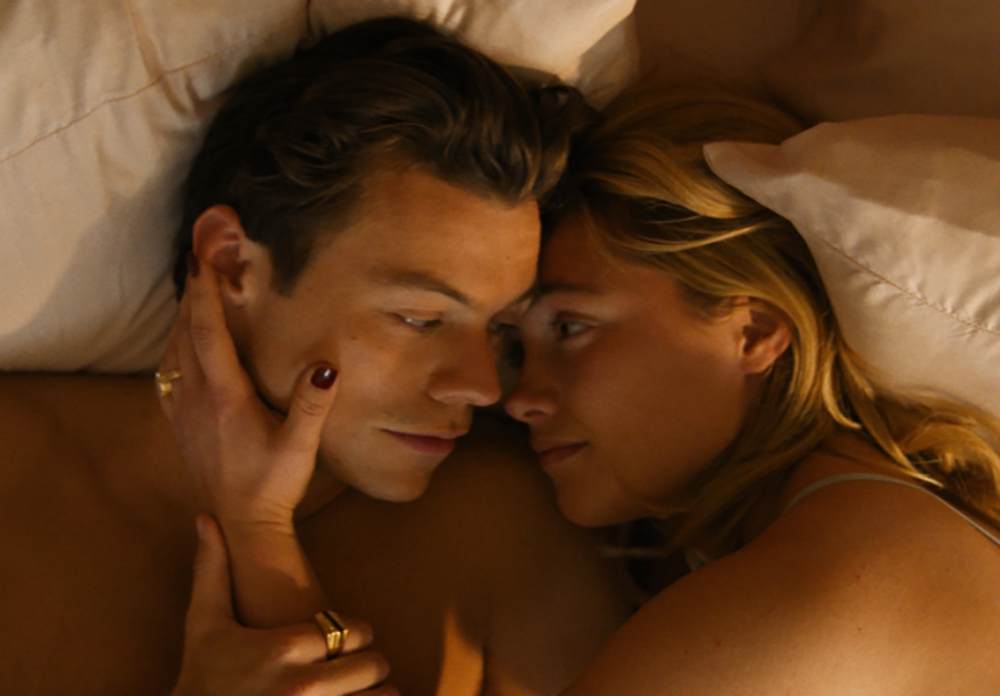
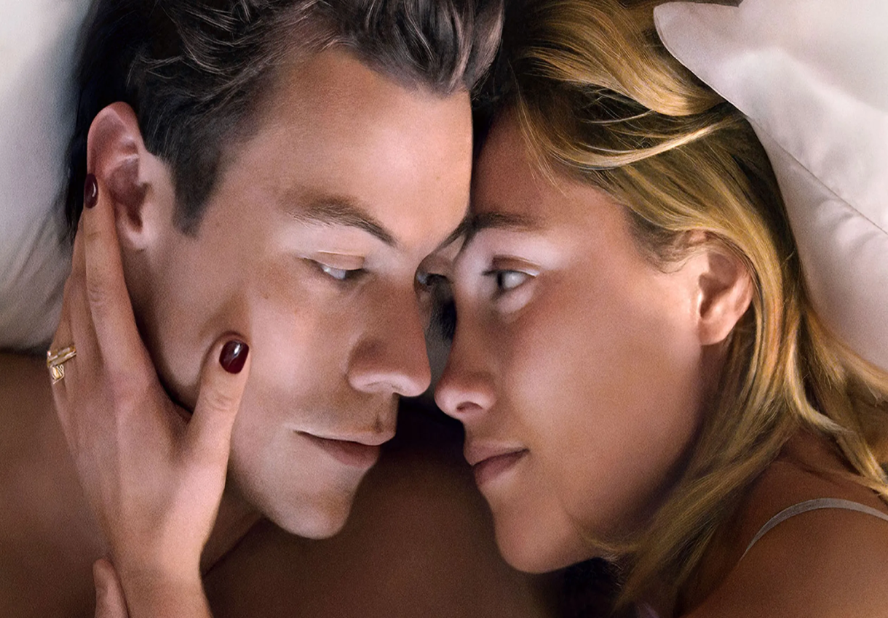
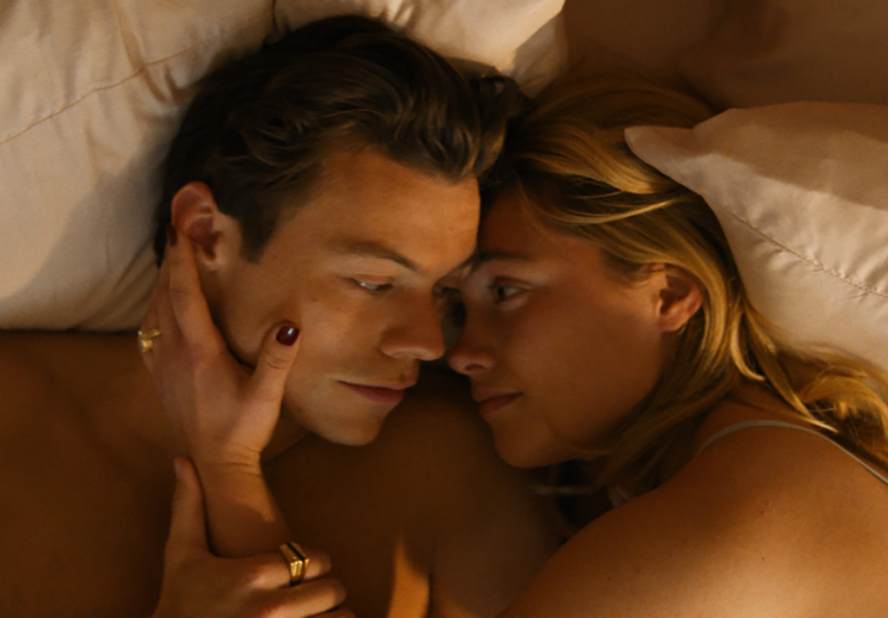
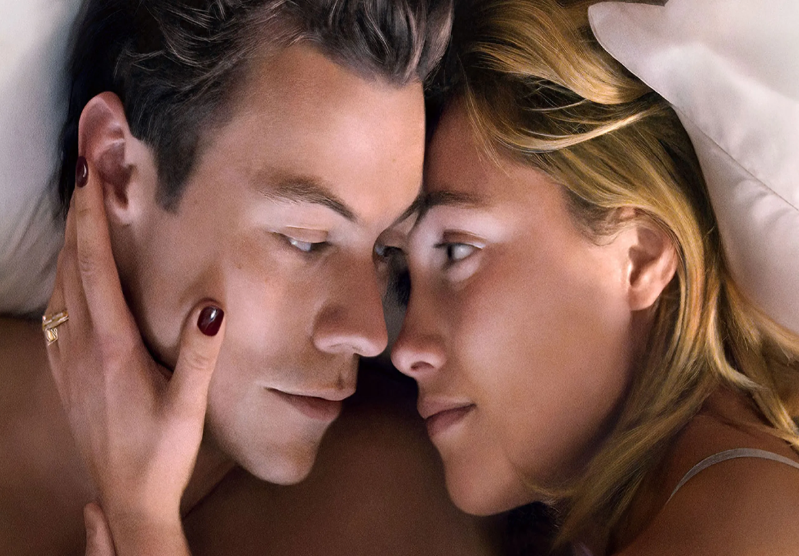

Sinopse / Crítica
Não se preocupe, Querida
Casal que tem a sorte de morar numa comunidade planejada, Alice e Jack fazem parte de um projeto
experimental em que todos parecem perfeitos e sem preocupações. No entanto, a verdade surge muito
mais sombria e densa no horizonte. Alice começa a questionar veementemente as razões por trás do
Projeto Victory.
Logo numa das primeiras cenas de Não Se Preocupe, Querida, Alice, a protagonista vivida por Florence
Pugh, está limpando a casa, enquanto na televisão é exibido o desenho animado A Dança dos Esqueletos
(1929), curta produzido por Walt Disney que fez parte da série Silly Symphony, ou seja, “Sinfonia
Tola”. Para os mais antenados, eis um indício que aponta para duas possíveis leituras: a proximidade
da morte – e uma consequente insurreição diante desse destino – e o fato de que alguém em cena
estaria sendo feito de bobo (no caso, a própria personagem presente na tela no momento em questão).
Elementos como esse, desde os mais discretos, até outros um tanto evidentes (como os muitos
flashbacks e fantasias que se misturam com a percepção dela frente aos eventos diários), podem ser
encarados como ‘pistas’ que, se seguidas com atenção, apontariam para um entendimento do todo,
abraçando, assim, seus mistérios e segredos. É de se lamentar, entretanto, que a diretora Olivia
Wilde passe mais tempo organizando o conjunto, e menos dando o devido cuidado ao seu desdobramento e
inevitável desfecho.
Barbra Streisand, Diana Ross e Lady Gaga são apenas algumas das artistas que deram seus
primeiros passos no mundo da música, mas posteriormente mostraram um talento à altura também como
atrizes. Entre os homens, tal simetria raramente se confirma. Nomes como Elvis Presley, Sting e
Justin Timberlake tiveram seus momentos de maior ou menor risco, mas não a ponto de fazer da atuação
uma atividade séria. Parece ser o caso de Styles, que se mostra frágil na maior parte do tempo,
ainda que os demais ao seu redor o tratem como alguém passível de admiração e imenso potencial. No
entanto, quando essa debilidade por fim se faz necessária, apenas consegue emulá-la por meio de uma
caracterização externa (barba por fazer, roupas desleixadas). Vistos em lado a lado, Florence Pugh é
uma verdadeira avalanche, concentrando todos os olhares cada vez que o casal surge em cena. São seus
medos e suspeitas que movimentam uma trama que promete muito, mas se resigna a entregar apenas o
mais imediato e previsível.
Este é um daqueles filmes no qual uma figura feminina central sofre e é maltratada do início ao
(quase) fim, vista como alucinada ou insana por seus pares masculinos – e até mesmo por outras como
ela – na maior parte do tempo, para que apenas nos instantes finais suas suspeitas se confirmem e
possa, então, prosseguir em uma aguardada volta por cima. Machismo e misoginia seriam acusações
fáceis diante desse cenário, mas tais percepções se confundem quando se observa que Não Se Preocupe,
Querida é uma realização majoritariamente conduzida por mulheres, feito por uma diretora, a partir
de uma história criada uma roteirista (Katie Silberman, indicada ao Bafta por Fora de Série, 2019) e
produzida por nomes como Wilde, Silberman e Catherine Hardwicke (diretora de Aos Treze, 2003). Por
mais que na sua metade inicial a trama se sustente apenas em suposições e desconfianças, é do meio
em diante, quando Pugh é colocada em rota de colisão com o enigmático empresário interpretado por
Chris Pine, que as chamas enfim se acendem. As faíscas entre eles são inebriantes, e o embate que
conduzem na mesa do jantar é o melhor momento até então. Mas, por mais que as apostas se elevem, o
que vem a seguir não consegue dar alicerce a tantas promessas. E assim, uma conclusão apressada
ganha espaço, repetindo contextos que vem se mostrando frequentes no cenário pop atual, indo desde
Matrix (1999) até WandaVision (2021).
Olivia Wilde sempre foi uma atriz, no máximo, mediana (seu papel de maior destaque segue sendo a
participação na série House, 2007-2012). Justamente por isso, ao estrear atrás das câmeras com a
citada Fora de Série (2019) gerou uma grata surpresa – de onde nada se espera, qualquer bom
resultado já causa espanto. Há uma grande distância, mesmo assim, entre uma comédia adolescente
sobre duas jovens querendo aproveitar a última noite antes da formatura e um thriller psicológico (e
de aspirações feministas, por mais que se confirmem apenas ao final) que discute temas como
realidades virtuais, metaverso e patriarcado. Ao dar um passo maior do que aparenta estar preparada,
a realizadora-revelação, mesmo que não tropece por completo – e isso em grande parte pela escolha
dos talentos que se cercou – acaba conduzindo um ou outro deslize que apenas experiência e uma mão
segura poderiam ter evitado. Afinal, por mais aterrorizante e invasivo que seja o cenário descrito,
o mesmo se mostra amparado por uma realidade tão concreta e perigosamente próxima que chega a ser
atordoante. E quando o factível invade – e supera – a fantasia, eis, portanto, a verdadeira ameaça.
Direção
Oliva Wilde
Crítica Especializada

Imagens Não se preocupe, Querida
 


